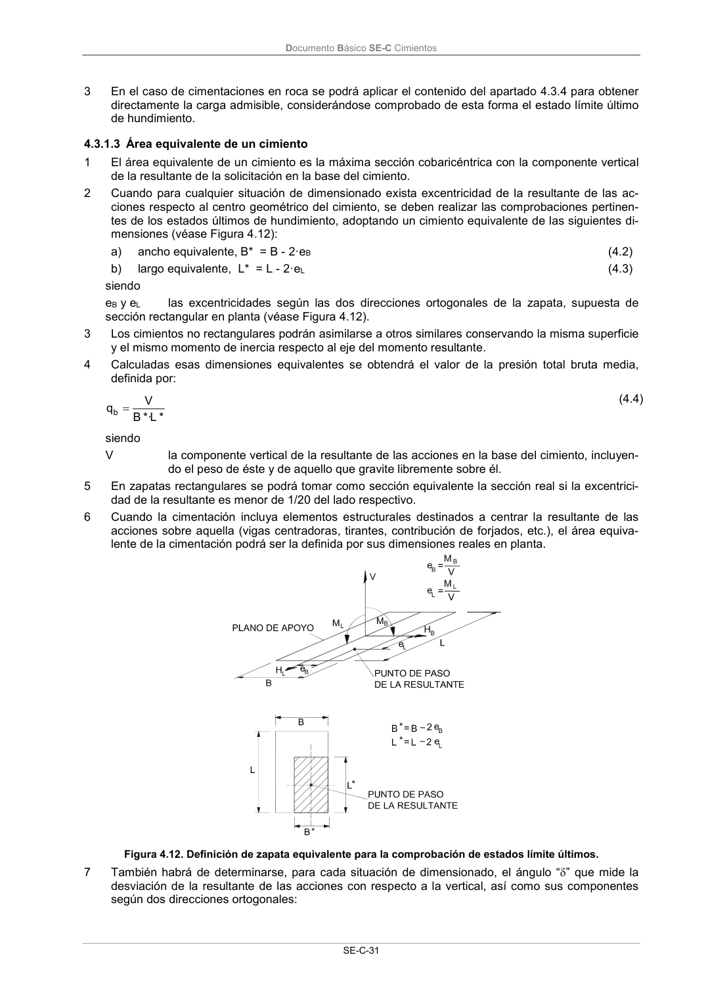
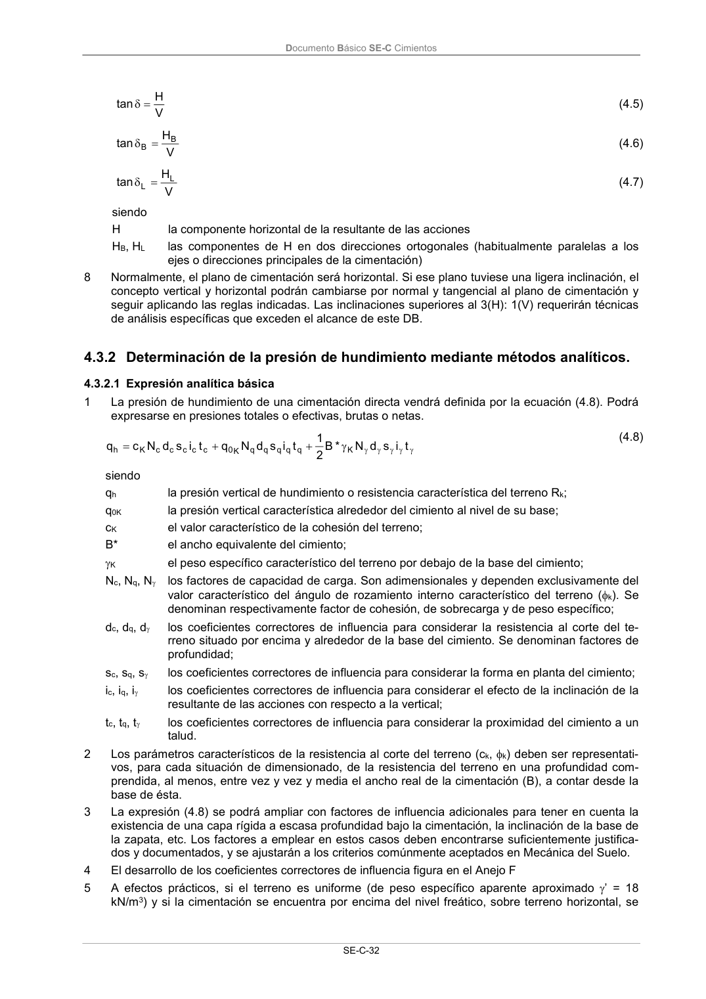

DB-SE-C Cimientos · edición 2019-12-20 · capa oficial
Documento DB-SE-C-oficial · SHA-256 del PDF a71133f4b0dca253e45ea3071c70f2a512354bcc5cd841bf89b1a502f567ac5e
Copia fiel del PDF fuente · Fuente oficial
Ficha de la disposición en la fuente oficial
Formatos: JSON del segmento · Markdown
sección rectangular en planta (véase Figura 4.12). 3 Los cimientos no rectangulares podrán asimilarse a otros similares conservando la misma superficie y el mismo momento de inercia respecto al eje del momento resultante. 4 Calculadas esas dimensiones equivalentes se obtendrá el valor de la presión total bruta media, definida por: * L *· B V qb (4.4) siendo V la componente vertical de la resultante de las acciones en la base del cimiento, incluyen- do el peso de éste y de aquello que gravite libremente sobre él. 5 En zapatas rectangulares se podrá tomar como sección equivalente la sección real si la excentrici- dad de la resultante es menor de 1/20 del lado respectivo. 6 Cuando la cimentación incluya elementos estructurales destinados a centrar la resultante de las acciones sobre aquella (vigas centradoras, tirantes, contribución de forjados, etc.), el área equiva- lente de la cimentación podrá ser la definida por sus dimensiones reales en planta. Figura 4.12. Definición de zapata equivalente para la comprobación de estados límite últimos. 7 También habrá de determinarse, para cada situación de dimensionado, el ángulo “” que mide la desviación de la resultante de las acciones con respecto a la vertical, así como sus componentes según dos direcciones ortogonales: Documento Básico SE-C Cimientos SE-C-32 V H tan (4.5) V H tan B B (4.6) V H tan L L (4.7) siendo H la componente horizontal de la resultante de las acciones HB, HL las componentes de H en dos direcciones ortogonales (habitualmente paralelas a los ejes o direcciones principales de la cimentación) 8 Normalmente, el plano de cimentación será horizontal. Si ese plano tuviese una ligera inclinación, el concepto vertical y horizontal podrán cambiarse por normal y tangencial al plano de cimentación y seguir aplicando las reglas indicadas. Las inclinaciones superiores al 3(H): 1(V) requerirán técnicas de análisis específicas que exceden el alcance de este DB.

